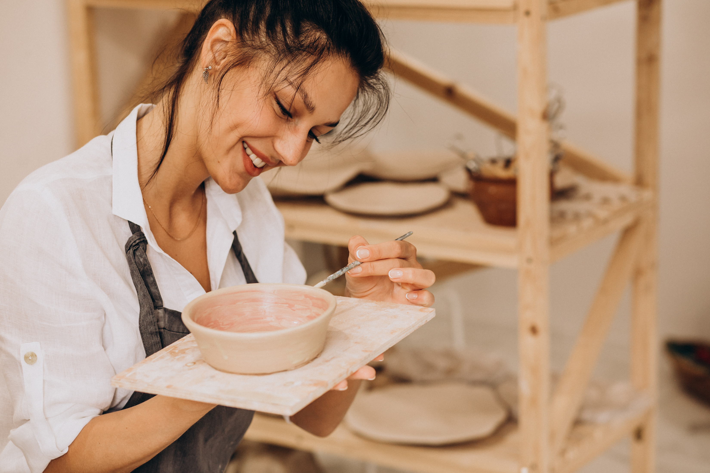
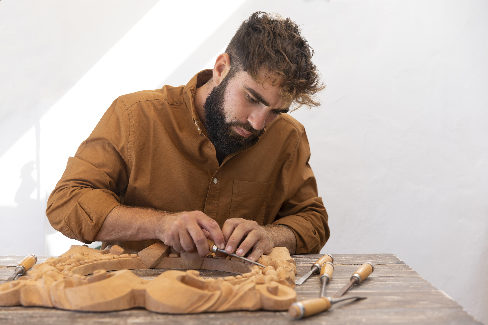
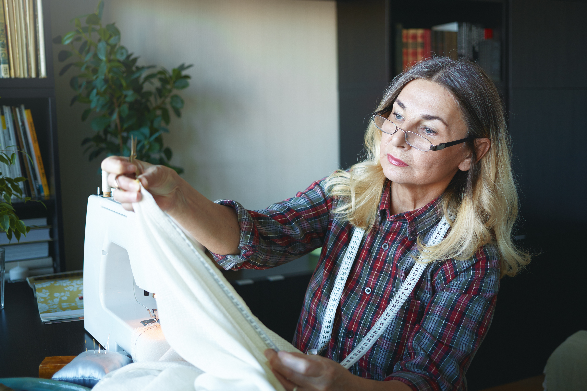
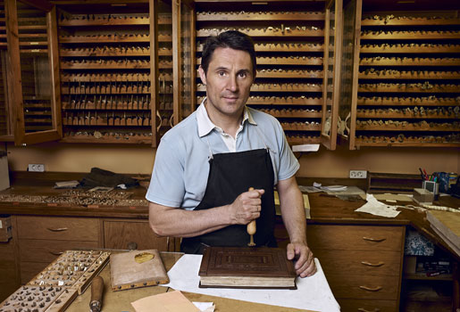

Maria Puig Ferrer
Ceràmica i foc
Mestra ceramista amb més de 20 anys d'experiència. Especialitzada en tècniques de cocció Raku i ceràmica d'alta temperatura. Ha exposat a Paris, Tòquio i Nova York.
Experts i artesans de renom internacional

Ceràmica i foc
Mestra ceramista amb més de 20 anys d'experiència. Especialitzada en tècniques de cocció Raku i ceràmica d'alta temperatura. Ha exposat a Paris, Tòquio i Nova York.

Fusteria artística
Fuster i escultor en fusta. Treballa amb espècies autòctones catalanes usant tècniques tradicionals combinades amb eines modernes de precisió.

Teixits i tintes naturals
Dissenyadora tèxtil i investigadora. Pionera en l'ús de tintes naturals extretes de plantes mediterrànies. Professora a l'Escola Massana de Barcelona.

Orfebreria i metall
Orfebre de tercera generació. Especialista en filigrana d'or i plata. Premi Nacional d'Artesania 2019 atorgat per la Generalitat de Catalunya.

Cistelleria i vímet
Artesana especialitzada en tècniques tradicionals de cistelleria. Ha recuperat i documentat tècniques gairebé desaparegudes de les comarques del delta de l'Ebre.

Enquadernació artística
Enquadernador i restaurador de llibres antics. Treballa per a biblioteques i col·leccions privades arreu d'Europa. Docentde la Fundació Tàpies.